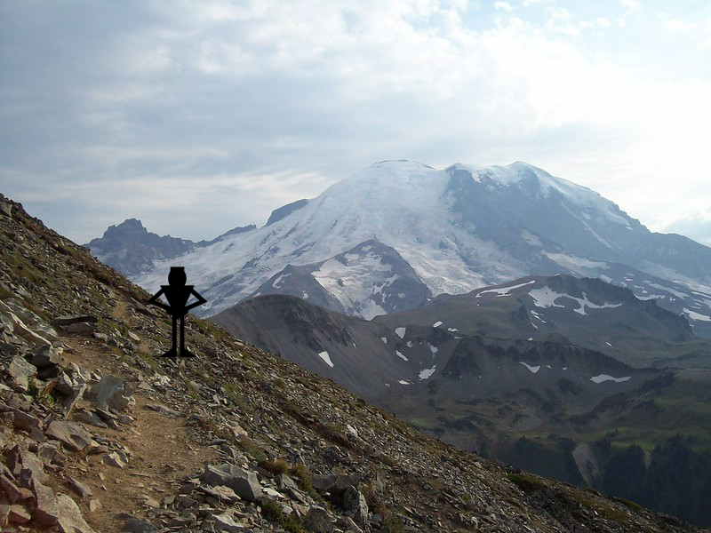

Jordan reaches the summit of the mountain after 2 hours of hiking. Once he reaches the top the air is thin but the view is breath-taking. He stands there and takes in the beautiful scenery of the snowy mountain peaks.
Credits: Photo made by Matthew Peralta, sound from https://www.bensound.com/royalty-free-music/track/acoustic-breeze